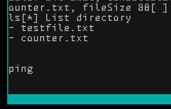

What
What we are trying to achieve
What’s missing in our CustomOS is a graphical terminal. Up until now we used the text mode of the BIOS, but it can’t be used to display image, colours or a graphical user interface.
We’ve seen in Pt.6 how we can access a raw graphics buffer and set invidiual pixels. Using this text can be displayed by displaying a pre-rendered bitmap font.
With that we can write our own graphical terminal that renders the characters to the screen. We will need to handle rendering the font, line breaks, line feed and carriage return ourselves.
When
In the last part of the series we’ve seen how code written in Rust can be built and interfaced with C. We can build on that knowledge now.
Why
Apart from being an interesting new langauge Rust is particularly useful for our use case when it comes to buffer overflow protection. While a bit tedious to develop it actively prevents the developer from accidently writing out of bounds of arrays.
With some programming effort we can display a graphical terminal that accepts user input and calls C functions that come back to Rust and print to the graphical terminal.
Contents
Contents
Background
Available Resolution and Colours
In the BIOS mode I’m using I’ve got 320x200 pixels available. I’m using 16-bit color.
One of the first things to think about is how to use the limited space and the limited number of availble colours.
We only have limited colours available in VGA 16-Bit
(Image taken from [1])
But as a starting point I had a look at the current Gnome Terminal color scheme used in Ubuntu 22.04 that I’ve come to appreciate
and simply aim for most similar colour.
How
Interfacing with C
In order to interface C with Rust we need to do a lot of type conversion. There are many Rust libraries to do this such as the “Foreign Function Interface” with it’s std::ffi::CString class, but the CustomOS is intentionally limited in functionally and lacks exception handling and a heap and most notably dynamic memory allocation (so now malloc, free).
To keep the OS as lean as possible I’m trying to see how much can be implemented without these features. This means many String-Functions built into Rust’s standard library won’t compile due to missing symbols.
Calling Rust from C
In order to safely call a Rust function from C we need to mark it with #[no_mangle] to prevent the Rust compiler from name mangling it.
It has to be public pub to be accessable and extern "C" to make it available to C.
Additionally all paramters need to be C compatible. The datatype cty::c_char in Rust is compatible with a C-Char.
#[no_mangle]
pub unsafe extern "C" fn shellKeyboardDown(mut key: cty::c_char, scancode: u8) {
if key as u8 == 10 { // newline
Arrays
Arrays seem a bit backward in defintion, but are okay once gotten used to.
Where a two dimensional Array in C looks like this:
char fontSourceCodeProLight10pt_buffer[93][14] = {
{0x00, 0x04, 0x04,
In Rust it becomes something like this:
pub const FONT_SOURCECODEPRO_LIGHT_10PT_BUFFER: &[[u8;14];93] = &[
[0x00, 0x04, 0x04,
Notice how row and column are swapped in order. Rust has a built-in linter that causes warnings if something other than snake-case and capital letters are used. C uses curly braces “{“, for Rust square brackets were chosen “[”. I guess it just had to be made different.
Dealing with Chars from C
C-Chars can be used from Rust by casting them over by as u8 as char.
if key as u8 as char == 'y' {
Dealing with Char Arrays from C
In order to get things working I’ll receive C chars cty::c_char or pointers to C-Char Array buffer: *mut cty::c_char and thoughtfully access them with Rusts built-in pointer::offset()-functions, then cast the result as u8 as char to get a Rust char.
I managed to get around most of that by simply sending character by character from C. Conveniently we already had the _put_char(char ch) function in C that handles all the output from the custom implementations of printf, snprintf, etc in C
Sending Rust str to C
The other way around is a bit more involved.
The following snippet does work for my use cases, but we need to keep in mind that Rust doesn’t null-terminate strings.
let mystring: str = "Testing attention please";
let bytes: &[u8] = mystring.as_bytes();
let name: *const cty::c_char = bytes.as_ptr() as *const i8; // Caution: this C-Char-Array is not null-terminated
ataList(name); // call a C function
The “unsafe” keyword
All of the above, due to raw pointer access and char conversion means that essentially the entire code has to be marked “unsafe” in Rust.
This is not ideal by any means, but is easily done by extending the function defintions with the unsafe keyword.
unsafe fn shellCheckCommand
Out of bounds checking
Where Rust really excels is for Out of bounds checking. For implementing a Terminal there are a lot of low-level pixel buffer/char array manipulations. Especially when iterating over arrays of char pointers it is far too easy to run out of bounds and overwrite other memory locations.
Each time I forgot to manually check the bounds
if SHELL_TEXT_POSITION > SHELL_TEXT_BUFFER.len() - 1 {
if SHELL_TEXT_POSITION < 0 {
Rust would immediatly try to pull in _ZN4core9panicking18panic_bounds_check17h17c53c20976be3aeE and the compiler would fail due to missing symbols.
It’s easy to find the culprit by commenting out code and then adding such out-of-bounds checks. The compiler will then build the code and as a developer I know I haven’t accidently overwritten anything.
Font Rendering
Initially I had used the “Roboto Mono” Font, but it isn’t designed to render to 6x14 pixels.
Later I switched to “Source Code Pro”. That looked a lot better.
I’ve spent quite some time to get my Python pre-rendering script to properly align the characters in the pixel buffer. Due to rounding errors by a single pixel the text was all over the place as seen below.
Eventually I got it right by writing the entire Char-Set into one wide image with Python’s PIL-library and then chopping it up to invidual images that were then convertered to *.xbm format to get C-Arrays and from there rewritten to Rust-Arrays by Python script.
With that I was eventually able to properly display the characters at the right height and without cutting of the bottom half of the letter ‘g’ or top half of ‘T’.

Progress
Conclusion
So far we’ve already achieved a lot. The CustomOS is now getting close in capabilities to an early version of DOS or Commodore DOS.
Looking back at the goals I had defined in Part 1 we’ve reached the most important ones:
- create a cross-compile toolchain - compile binaries that can run directly on the hardware
- compile a bootloader - boot the OS
- read keyboard input - allow user interaction
- add a file system driver - read and store files
- enable graphical output - be able to graphically interact with the system
I’ve added in
- interrupt handling - to better handle the keyboard
- bindings from Rust to C - to be able to write the graphical terminal in the more safe Rust programming language
Additionally I had planed to
- run applications from disk - to be able to extend the OS with useful features
- write a simple text editor - to write text and also source code from inside the OS
- add a small built-in compiler - to be able to create more applications from within the operating system
There are also a number smaller fixes that can be made
- show a prompt on the terminal and use colours for the text
- increase the screen resolution from 320x200 to 640x480
- wire more terminal functions to the existing code “list directory”, “write file”, “read file”, “append file”
- introduce mouse support and display images
And some new ideas
- implement a basic Network Interface driver, bring in a small microcontroller-based TCP/IP stack and perhaps the mbedtls library for HTTPS and use it to interact with services on the Internet using HTTP-Get-Requests
- run the game DOOM on it. Since “doomgeneric” only requires setting up a keyboard-callback, tick-counter and pixelbuffer that should be easily achievable.
1] https://lospec.com/palette-list/microsoft-vga